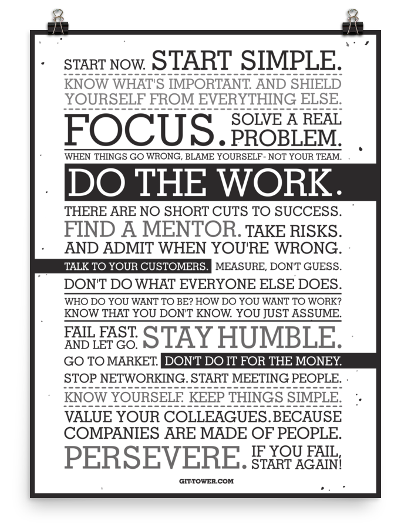
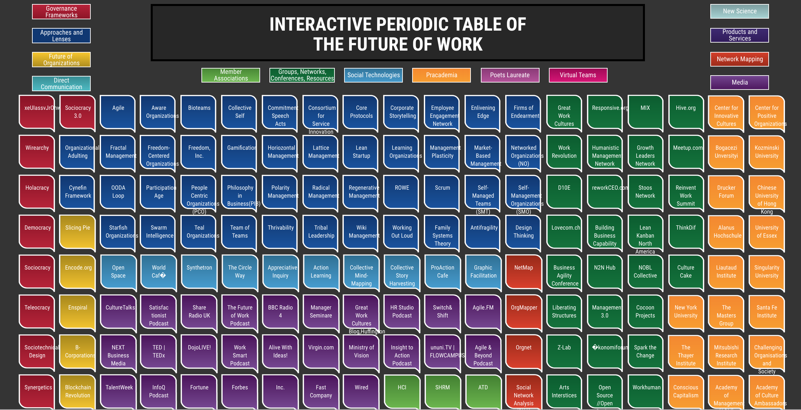

Human needs matter!
By understanding and focusing on our needs, we design better (and more profitable) organizations, leading to a more fulfilled world.
Radical Manifesto
We’re passionate about our manifesto, but it needs some fine tuning before we share it. In the meantime, these are things that we believe in.
Radical Landscape
The Periodic Table of the Future of Work shows the broad scope that the Future of Work embodies – from frameworks and approaches to organizations and networks to technologies.
We will continue to evolve the table, including making it interactive. Our thanks to Radical Doug Kirkpatrick for its initial development.
Radical Model
An organization’s principles are formed by rights, governance and collaboration.
At the core of these principles is the Human Code, the basis of human needs.
The Human Code model provides insight into what drives the decisions, motivations and behaviors of individuals and teams within the work place. This can be viewed from three contexts:
Understand interactions at the individual and team level. What are the motivations and instincts that drive behavior and feelings? How are we interacting with one another? How can we explain or perhaps change a troublesome context within the organizational environment?
Impact of organization decisions on people. When a decision is made within an organization, how does that impact human needs? Since people are at the core of organizations, understanding how they are impacted will directly affect the outcome of the decision.
Analyze organization frameworks, e.g. Holacracy vs Teal. How do they compare? Where are their strengths and weaknesses? The resulting analysis can be shared with the broader community for a better understanding of different practices.
The Human Code model has two halves: self and social codes. At the core is meaning and belonging (Level 1). One moves to the higher levels when that level is generally fulfilled, although it isn’t linear movement nor black and white. Moving to the outer levels reflects growth to more capabilities of fulfilment. Every time we make a decision, we run through the algorithms of the Human Code. Note these are not personality traits nor states.
Radical Partners
Meet our Radical Steering Group
Sasha Aganova | Pietro Antolini | Tine Bieber | Lisa Byron | Elaine Favero | Natty Gur | Kelly Jackson | Catherine Jaeger | Doug Kirkpatrick | Jose Leal | Thianne Martins | Matt Perez | Tullio Siragusa | Dev Tandon | John Thompson | Paul Walker
Contact Us
Interested in learning more? Contact us. We look forward to talking with you.
class="highlight">Join us at one of our Radical Orgs MeetUps! We’re meeting in Silicon Valley - San Jose Dallas, and Silicon Beach - LA.